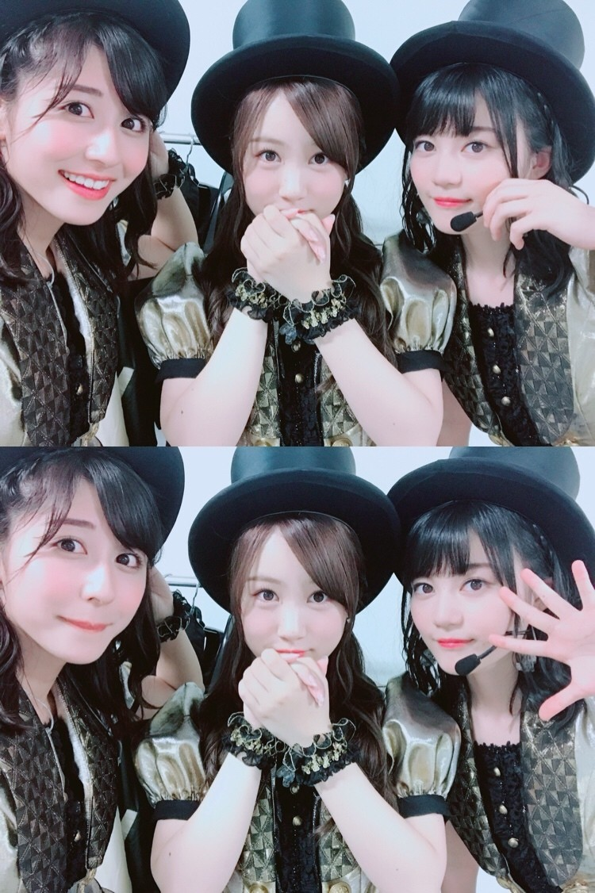
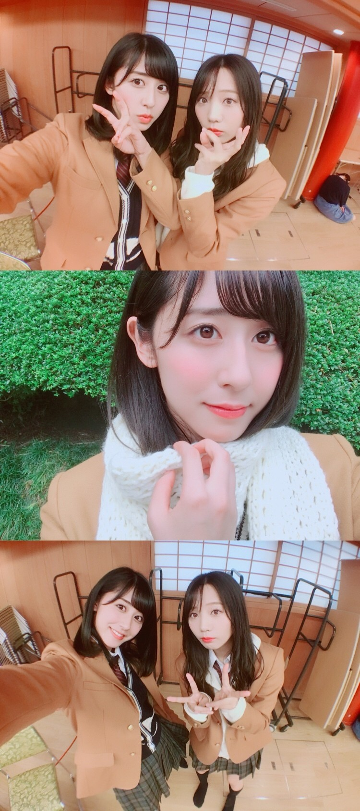

ちはるーむへようこそ
真夏の全国ツアー、地方公演が
無事終了致しました！
まだ完全には終わっていませんが...
今年の夏は長かったな〜〜
楽しんでいただけましたでしょうか？？
来てくださった皆さん、
ありがとうございました！！

キラッキラの金色のワンピースに
シルクハットに、実はステッキまで！
「君の名は希望」をジャズ風にアレンジした
このコーナー、好きでした☺︎
そして、「いつかできるから今日できる」
が発売されました！
ジャケ写では久しぶりに高校生っぽい
制服を着ました。
マフラーが冬っぽいね

ポーズは愛未と一緒に
ギャルっぽくしてみちゃった◎
現在大学3年生なので
少し恥ずかしいです。
そして19thアンダー曲
「my rule」も公開されました！
曲もダンスもMVの雰囲気も大好き♡
私のポジションは2列目の端です。
安定になってきたこの位置。
有り難いですm(_ _)m
是非見つけてください！！！
このあいだの個別握手会の写真とか
雑誌MARQUEEのオフショットとか
実はまだまだ載せたい写真があるけど
今日はもういっぱいいっぱい...
ということでまたブログ更新します！！
いまはアンダーライブ九州シリーズにむけて
着々と準備が進んでおります。
あと少し！！
斎藤ちはる